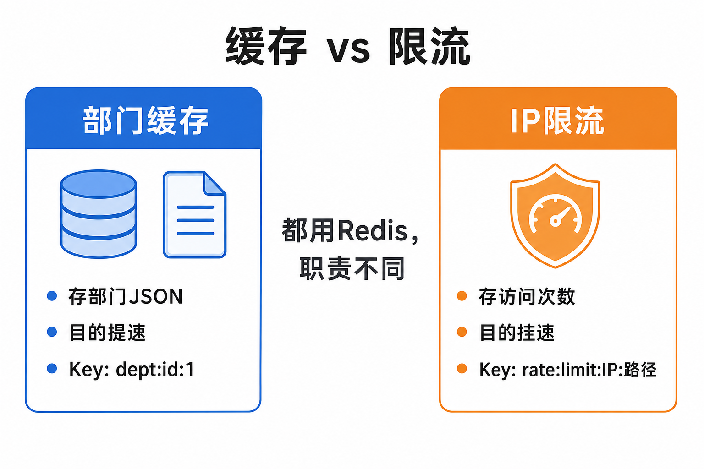
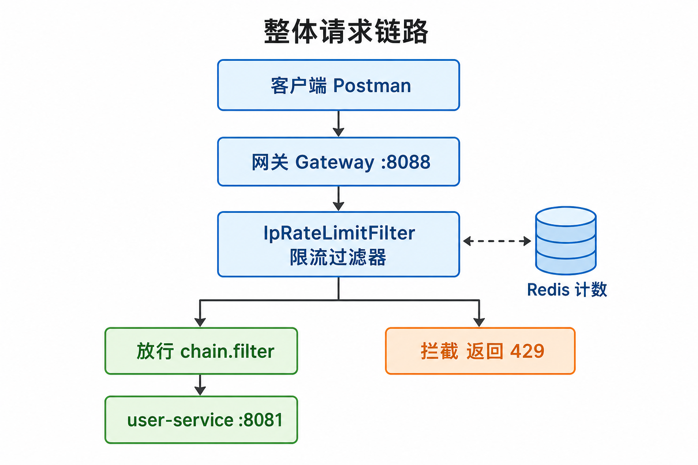
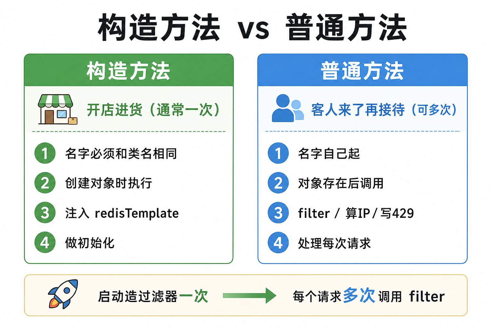
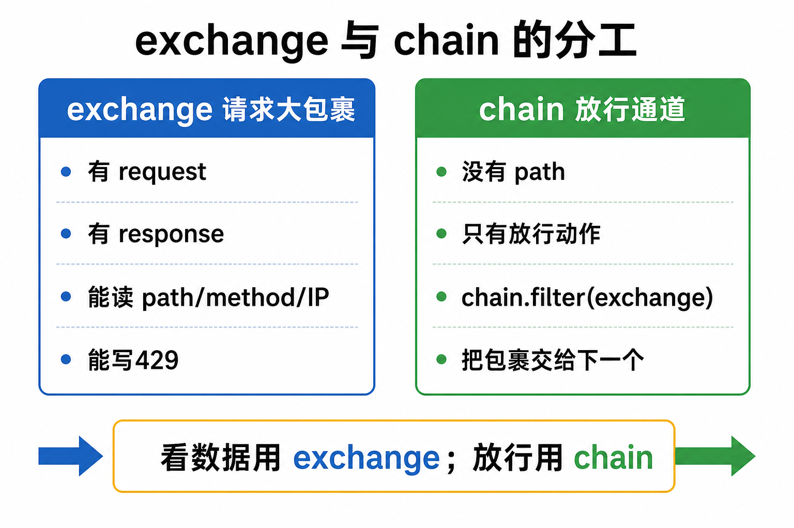
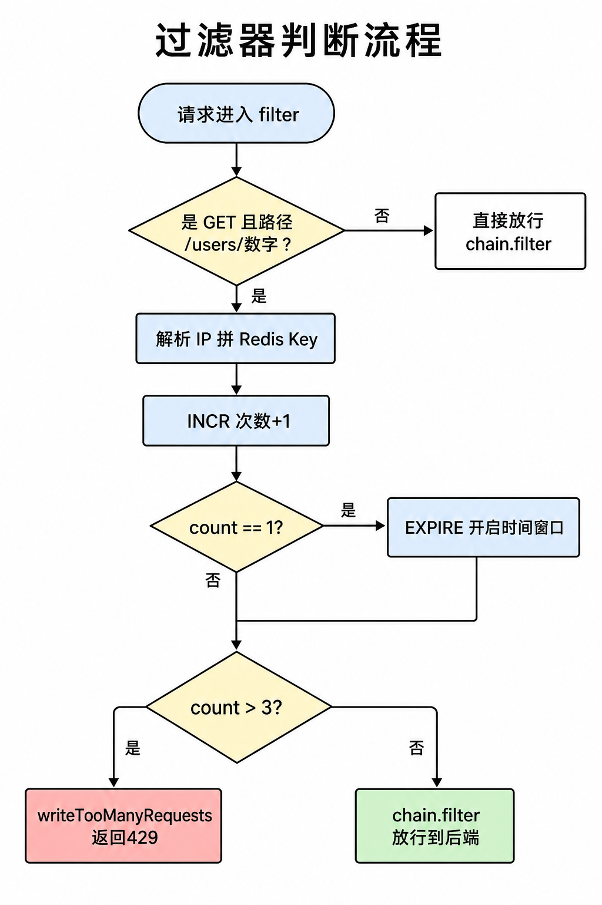
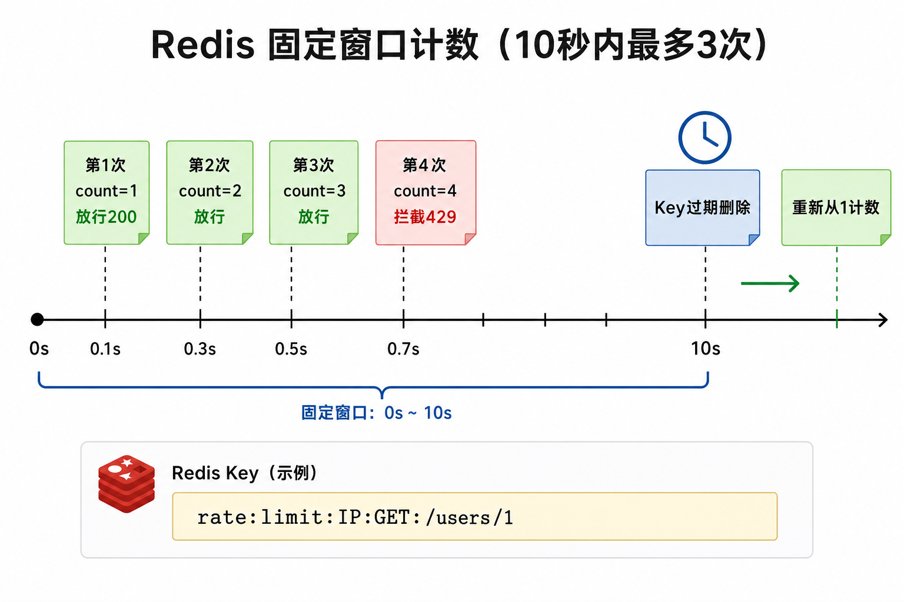

网关 + Redis IP 限流分析文档
初学者复盘版（含可视化图解）
1. 这一板块在解决什么问题
1.1 业务规则
| 维度 | 规则 |
|---|
| 谁 | 同一个用户 IP |
| 哪个接口 | GET /users/{id}（用户详情 getById） |
| 多长时间 | 时间窗口（代码里 WIDOW=10 秒，学习可调；题目原始常见 1 秒） |
| 多少次 | 不能超过 3 次 |
| 超限怎么办 | HTTP 429 + JSON 提示，不转发到 user-service |
1.2 为什么放在网关
- 统一入口，一次实现保护后端
- 超限请求进不了业务服务，更省资源
- 和路由、鉴权等横切能力放一起
一句话：限流是门口保安，不是柜员办业务。
2. 前置概念：Redis 与网关
2.1 Redis
Redis 是内存中的 Key-Value 存储。本需求用 String 存次数，配合 INCR（加一）和 EXPIRE（过期）实现固定窗口限流。
- 快：适合高频计数
- 带 TTL：Key 过期 = 窗口结束
- 可共享：网关多实例时计数仍一致
2.2 网关
API 网关是微服务统一入口。本项目 guo-gateway 端口 8088：
/users/** → user-service/departments/** → dept-service
网关是 WebFlux，所以用 ReactiveStringRedisTemplate，不能照搬 dept 服务里阻塞的 StringRedisTemplate。
3. 和部门缓存的区别（可视化）

图：缓存存数据提速；限流存次数控速。都用 Redis，职责不同。
| 部门缓存 | IP 限流 |
|---|
| 目的 | 少查库，读得更快 | 控制访问频率 |
| 存什么 | 部门 JSON | 次数 1、2、3… |
| Key 举例 | dept:id:1 | rate:limit:IP:GET:/users/1 |
| 类比 | 公告栏 | 保安 |
4. 整体架构与请求链路（可视化）
务必用网关地址测试：http://localhost:8088/users/1。直连 8081 不会走限流。

图：客户端 → 网关 → 限流过滤器 →（放行到 user-service / 或拦截 429）
5. 最基础语法清单（复盘必看）
5.1 类型 / 变量 / 方法
示例：
ServerHttpRequest request = exchange.getRequest();
│类型 │变量名 │方法调用
- 开头：类型（什么盒子）
- 中间：变量名（盒子叫啥）
- 带
()：方法（在干活）
5.2 构造方法 vs 普通方法（可视化）

图：构造=开店进货（通常一次）；普通方法=客人来了再接待（可多次）
| 构造方法 | 普通方法 |
|---|
| 名字 | 必须和类名相同 | 自己起名 |
| 何时 | 创建对象时 | 对象存在后 |
| 次数 | 通常一次 | 可很多次 |
| 本类 | 注入 redisTemplate | filter / 算 IP / 写 429 |
5.3 exchange 与 chain（可视化）

图：看数据用 exchange；放行用 chain
exchange：本次请求大包裹（有 request/response）chain：放行通道；chain.filter(exchange) 继续往后
5.4 其他常用语法
!= == && || !条件 ? A : B：三元运算参数 -> { ... }：Lambda 临时小函数Mono：以后会完成的事；flatMap：等结果到了再继续
6. 类结构总览
- 字段：log、USER_GET_BY_ID、LIMIT、WIDOW、redisTemplate
- 构造：IpRateLimitFilter(redisTemplate)
- 主流程：filter
- 工具：resolveClientIp、writeTooManyRequests
- 排序：getOrder 返回 -100（越小越先执行）
7. 过滤器判断流程（可视化）

图：从进入 filter 到放行/429 的判断树
7.1 同步思维版（帮助理解异步代码）
- 取出 method、path
- 不是 GET /users/数字 → 放行
- 解析 IP，拼 redisKey
- count = Redis INCR
- 若 count==1 → EXPIRE 开启窗口
- 若 count>3 → 写 429；否则放行
为什么只在 count==1 时 EXPIRE？ 第 1 次打开倒计时；第 2、3 次不要刷新过期，否则窗口会被拉长，限流失灵。
8. Redis 窗口计数（可视化）

图：窗口内第 1~3 次放行，第 4 次起 429；到期后重新从 1 计
Key 示例：rate:limit:127.0.0.1:GET:/users/1
9. 三个辅助方法
9.1 resolveClientIp
- 优先 X-Forwarded-For（代理）取逗号第一段
- 否则用远端地址
- 都没有返回 unknown
9.2 writeTooManyRequests
- 必须操作 Response，不是 Request
- 设置 429、JSON、写出 Body
- 不再调用 chain.filter
Postman 要看状态码 429 和 Body 里的「请求过于频繁…」（文案不一定含「繁忙」二字）。
9.3 getOrder
返回 -100，让限流尽量靠前。由框架调用。
10. 测试与排错
正确地址：GET http://localhost:8088/users/1
Postman 一直 200 的常见原因：
- 打到了 8081（绕过网关）
- 打的是列表
/users?page=1
- 两次间隔超过窗口
- 改代码后没重启 gateway
PowerShell 连发验证：
1..5 | ForEach-Object { curl.exe -s -o NUL -w "第$_次 status=%{http_code}`n" http://localhost:8088/users/1 }
期望：前几次 200，后面出现 429。
11. 面试常问（简答）
- 为何 String+INCR+EXPIRE：原子计数 + TTL 做固定窗口
- 为何 count==1 才 EXPIRE：避免刷新 TTL 拉长窗口
- 为何放网关：统一入口、保护后端
- 缓存 vs 限流：一个存数据提速，一个存计数控速
- 为何 Reactive Redis：Gateway 是 WebFlux，避免阻塞
12. 自测题与参考答案
- exchange 和 chain 分别负责什么？
- 为什么 path 从 exchange 取，不从 chain 取？
- 构造方法和 filter 谁创建时执行？谁每次请求执行？
- Redis Key 为什么要拼 IP 和 path？
- curl 能 429、Postman 一直 OK，最常见原因？
- log.warn 会出现在 Postman 吗？
参考答案：
- exchange=数据包裹；chain=放行通道
- 请求数据在 exchange；chain 没有 path
- 构造创建时一次；filter 每请求可进
- 按用户、按接口分别计数
- Postman 打错端口/路径，或点击太慢超过窗口
- 不会；只在 gateway 控制台。Postman 看 429 和 Body
13. 复盘检查清单
- □ 能画出：客户端→网关→过滤器→Redis→放行/429
- □ 能区分：类型名 / 变量名 / 方法名
- □ 能说明：构造 vs 普通方法
- □ 能说明：为何 count==1 才 expire
- □ 知道必须访问 8088 且路径为 /users/{数字}
- □ 知道缓存与限流都用 Redis 但职责不同
附录
- 源码：guo-gateway/.../filter/IpRateLimitFilter.java
- 配置：guo-gateway/src/main/resources/application.yml
- 完整 Markdown 详版：docs/网关-Redis-IP限流分析文档.md
- 配图目录：docs/images/